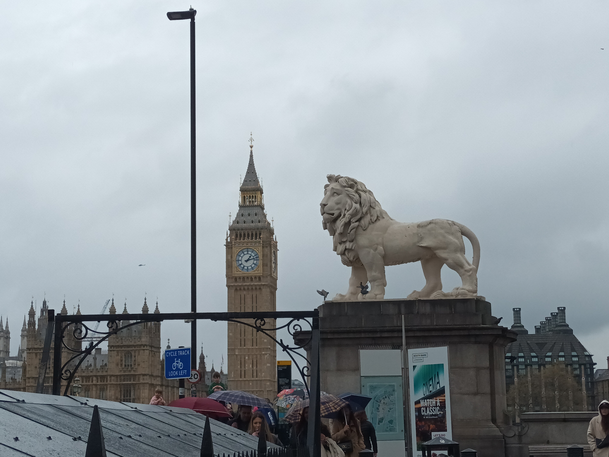
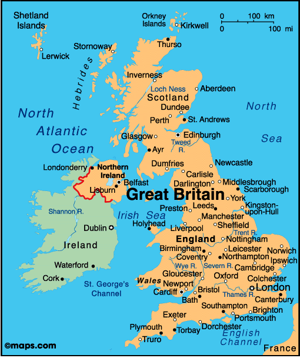

Tagasi

Suurbritannia (ka Ühendkuningriik (ÜK), inglise keeles United Kingdom, (UK)) on riik Euroopas, mis koosneb Inglismaast, Walesist, Põhja-Iirimaast ja Šotimaast.
Asustatud -- 1. mai 1707
Pealinn-London
Keel -- inglise keel
Rahva arv -- 67 326 569
Linnad mida olen külastanud: Brighton,London,Cambridge
Mida olen saavutanud selle reismisega:
Ajalugu õppinud:✅
Kohaliku toitu proovinud:✅
Kohaliku elamust proovinud:✅
